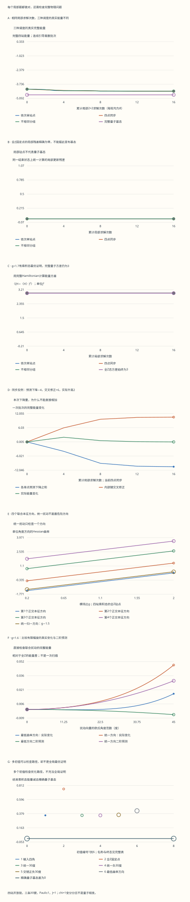

本页目录
基础衔接 08 · 完整扫描：局部下降为什么不能代替整体判断？
先修：MPS 范数与局部优化、张量网络、Ising 自旋矩阵。本讲实际执行四站开放链的乘积态扫描，对照依次更新、同步更新和不相邻分组。固定 Pauli 本征值 ±1、J=1、正横场；键维始终为1，没有实现一般 DMRG。
1. 一次局部求解之后，邻居已经变了
上一讲把固定环境的更新写成广义本征问题。但一个站点更新后，它就成了相邻站点的新环境。依次使用最新邻居，与各自看旧邻居、最后一起替换，是两个不同算法。
这里的每个 MPS 张量只有两个数，虚拟键维 \(\chi=1\)，完整态为四个单站点态的乘积：
态振幅使用半角，Bloch 分量使用整角。实验允许四个不同的初始角，包括负角和负 \(z\)；默认均为30°。每次输出把等价角规范到 \((-\pi,\pi]\)，只选一个可重复的振幅代表，不改变物理态。这个实乘积家族没有跨切口纠缠。
2. 从完整能量中分离一个站点
本讲固定开放链，需与 Ising 奇偶扇区一讲使用的周期链区别开：
只有三条相邻键，没有第四到第一站点的键。固定其他站点，定义 \(b_j\) 为实际邻居的 \(x\) 分量之和，边界站点只有一个邻居。完整能量可以写成 \(E=E_{\rm env}-b_jx_j-gz_j\)，对应的局部问题为
其他三个站点都是归一态，中央的两个物理基矢也正交，因此本例局部范数矩阵确实是 \(I\)。环境常数不改变最低局部向量，但报告四站能量时必须加回来。完整账本同时保留局部本征值、环境常数和“只替换本站点”的完整候选能量。
3. 一步下降的证明有一个关键前提
由 Cauchy–Schwarz，\(b_jx_j+gz_j\le\sqrt{b_j^2+g^2}\)，等号给出
这里固定了所有其他站点，所以环境常数抵消。正横场保证分母非零，最低局部态唯一。这个证明允许任意实初始角，更新后 \(z_j>0\)；它没有证明“所有点同时换掉”的总能量也等于这些下降量之和。
默认一轮顺序固定为 \(1\to2\to3\to4\to4\to3\to2\to1\)。转向重复端点，所以一轮恰有八次求解。重复的端点没有新环境，精确算术中能量不变；相邻两轮之间重复站点1同理。保留这些步骤，是为了让次数、状态和账本一一对应。

4. 默认账本：每个数都来自一个完整态
默认 \(g=1\)、四角均为30°，所以 \(x_j=1/2,z_j=\sqrt3/2\)，初始能量为 \(-3/4-2\sqrt3\approx-4.214101615\)。第一站更新后 \(x_1=1/\sqrt5,z_1=2/\sqrt5\)；第二站必须使用这个新邻居，得到 \(b_2=1/\sqrt5+1/2\)，不能仍取1。
| 步数 | 更新站点 | 完整能量 |
|---|---|---|
| 0 | 初态 | −4.214101615 |
| 1 | 1 | −4.216110200 |
| 2 | 2 | −4.253871768 |
| 3 | 3 | −4.346613279 |
| 4 | 4 | −4.357140838 |
| 5 | 4 | −4.357140838 |
| 6 | 3 | −4.358608427 |
| 7 | 2 | −4.372742052 |
| 8 | 1 | −4.397398410 |
两轮后为约−4.403606895。同一开放模型的完整16维矩阵给出量子基态能量约−4.758770483，剩余能量差约0.355163588。新账本保留全部轮次与每个完整16分量态，同时计算 \(H\Psi\)、完整范数和能量；没有只用首轮几个数代表整次优化。
5. 同步更新：遗漏的相邻键修正可以大过所有下降
设一批同时更新的站点集合为 \(B\)，每个局部题都使用同一批次开始时的旧邻居。令 \(\Delta x_j=x_j^{\rm new}-x_j^{\rm old}\)。逐条展开键能量，得到精确恒等式：
第一项是“其余点不变，只换本站点”时的下降；第二项来自两个端点同时改变的键。它没有固定符号。不相邻站点可以一起更新，因为第二项为空；四点同步一般不行。
一个完全可复算的反例取 \(g=1/2\)，初始四角为 \((0°,60°,-60°,0°)\)。旧分量为 \(x=(0,\sqrt3/2,-\sqrt3/2,0)\)、\(z=(1,1/2,1/2,1)\)，能量为−3/4。四点各自精确求解后得到交错的新 \(x=(\sqrt3/2,-\sqrt3/2,\sqrt3/2,-\sqrt3/2)\)，新 \(z\) 都为1/2，完整能量为5/4。
实验实际运行三种调度，每轮都计八次局部求解：逐点顺序如上；四点同步两批；不相邻分组为 \((1,3)\to(2,4)\to(2,4)\to(1,3)\)。图的横轴按局部求解次数比较，表同时给批次和轮次。不能用“每批”作横轴，却把一站和四站的工作量混为一谈。
6. 零局部残差的陷阱：联合方向才看得见
全 \(+Z\) 初态满足 \(x_j=0,z_j=1\)。每个站点看到 \(b_j=0\)，局部最低态仍是原态，任何轮数都停在 \(E=-4g\)。但在 \(g=1\)，把四个角一起改成小的 \(\alpha\)，有 \(E=-3\sin^2\alpha-4\cos\alpha=-4-\alpha^2+O(\alpha^4)\)，所以整体能量可以下降。
统一扰动仍只检查了一个方向。令 \(\phi\) 是四个小角组成的向量，\(A\) 是四站路径图的邻接矩阵，则
用端点外补零的正弦递推可直接验算四个正交方向：\(v_j^{(k)}=\sqrt{2/5}\sin(jk\pi/5)\)，其中 \(j,k=1,\ldots,4\)。相应曲率为 \(g-2\cos(k\pi/5)\)。最低曲率的变号点是
统一归一方向 \((1,1,1,1)/2\) 的曲率只有 \(g-1.5\)。因此 \(g=1.6\) 时，统一方向已不下降，最低本征方向仍可下降。实验以角度向量的欧氏范数 \(\varepsilon\) 为扰动幅度；四点统一扰动时，每点角度是 \(\varepsilon/2\)。默认5°范数下，最低方向实际能量差约−0.000065138。
Hessian 判断足够小的扰动，不能保证任意有限幅度都下降。图把实际能量差、二阶预测和余项分别保留，让45°等较大幅度也可直接比较。
7. 什么时候能给乘积态全局最优的证明？
这里可以证明一部分参数范围。对任意纯乘积 Bloch 向量，固定 \(x_j\) 后，正横场使最大允许的 \(z_j=\sqrt{1-x_j^2}\) 最有利；取 \(y_j=0\) 就能实现。因此考虑实态并不损失这个全局下界。
利用 \(\sqrt{1-x^2}\le1-x^2/2\) 和邻接矩阵的最大本征值 \(g_*\)，得到
所以 \(g\ge g_*\) 时，全 \(+Z\) 态确实是整个乘积态家族的全局最优。即使恰在阈值，非零 \(x\) 也使平方根不等式严格，零曲率不意味着一整条等能态。\(g<g_*\) 时，负曲率给出联合下降见证；多个初值找到相同终态，仍不能替代全局最优证明。
这是固定四站、固定 \(\chi=1\) 变分家族中的分岔。它不是四站量子系统的真正相变，也不能当作无限 Ising 链的临界点。完整量子问题的边界、维数和允许纠缠都不同。
8. 再算量子方差：局部停止与本征态分开
局部残差在结束状态的同一组邻居上计算：
它只表示继续单点更新能改变多少。完整量子方差则为 \(\operatorname{Var}(H)=\|(H-\langle H\rangle)\Psi\|^2\)。实验从完整16维矩阵直接计算这个非负平方范数，同时给出基态保真度和能量差。
全 \(+Z\) 态是最清楚的对照。场项只贡献−4g，三条 \(XX\) 键产生三个相互正交的双翻转态，所以
即使在已证明乘积态全局最优的强场范围，它也不是完整 Hamiltonian 的本征态。优化误差与表示限制必须分开；单次未收敛扫描的剩余能量差通常同时混合两者。一般情况下方差为零只证明是某个本征态，还需能量等信息判断是否为基态。
9. 实验：每一种“停止”都给出对应证据
先看默认扫描，再选择全Z固定点。比较 \(g=1.6\) 和 \(g=1.7\)：前者存在联合下降方向，后者有乘积态最优证明，两者的量子方差仍都是3。最后选择同步反例，把单点预测、内部键修正和实际变化逐项相加。
| 预设 | g | 轮数 | 当前调度 | 结束能量 | 局部残差 | 量子方差 | 最大批次上升 | 最低联合曲率 | 乘积全局证书 |
|---|---|---|---|---|---|---|---|---|---|
| 默认两轮 | 1 | 2 | 依次单点 | -4.40360689 | 0.00657656515 | 0.493919523 | 0 | -0.618033989 | 否 |
| 零局部残差 | 1 | 2 | 依次单点 | -4 | 0 | 3 | 0 | -0.618033989 | 否 |
| 同步反例 | 0.5 | 2 | 四点同步 | 1.92530928 | 1.93089734 | 3.47696861 | 2 | -1.11803399 | 否 |
| 隐藏下降方向 | 1.6 | 2 | 依次单点 | -6.4 | 0 | 3 | 0 | -0.0180339887 | 否 |
| 乘积全局证书 | 1.7 | 2 | 依次单点 | -6.8 | 0 | 3 | 0 | 0.0819660113 | 是 |
| 十二轮扫描 | 1 | 12 | 依次单点 | -4.40366948 | 2.78103976e-13 | 0.480783639 | 8.8817842e-16 | -0.618033989 | 否 |
下载六份完整记录，含全部16维态、Hamiltonian、每次局部解、内部键修正和联合方向。
七张图分别显示完整能量、局部残差、量子方差、批次修正、联合曲率、实际扰动和多初值结果。十五张表保留三种调度的全部批次、每个局部矩阵、每条内部键、所有完整态系数与扫描点。浮点算术中约 \(10^{-15}\) 的能量差不应解释成有限的上升机制；原始差值仍保留，同步反例的升高2则远离这个尺度。

10. 八道迁移题：给“收敛”加上准确的主语
1. 默认第一站求解后，环境常数是多少？
没有包含站点1的两条键贡献−1/2，后三个场项贡献−3√3/2，所以环境常数为−1/2−3√3/2。加局部最低值−√5/2，才得到完整能量−4.216110200。直接报告局部本征值会漏掉其余站点。
2. 转向时重复端点，为什么恰好没有新的下降？
前后两次使用同一组邻居。第一次已选中唯一最低局部态，第二次没有新环境，精确结果不变。程序仍把它计作一次局部求解；实际实现可省掉，但应同步修改工作量定义。
3. 同步反例里，每个局部题都下降，为何完整能量升高？
各点单独替换的预测变化为−1/2、−3/2、−3/2、−1/2，合计−4。三个内部键的交叉修正为3/2、3、3/2，合计6。实际变化是−4+6=2。各局部证明所固定的其他站点，在同步替换中也动了。
4. 为什么站点1和3可以一起更新，站点1和2却需额外检查？
开放链的1与3之间没有直接键，各自变化不会产生一条两端同时更新的能量项，所以预测下降可以相加。1与2之间存在XX键，必须保留−Δx1Δx2。分组的安全性依赖Hamiltonian的实际耦合结构。
5. g=1.6时，统一方向与最低曲率方向给出什么不同结论？
统一归一方向的曲率为0.1，最低Hessian方向的曲率约−0.018034。前者不能降低足够小扰动的能量，后者可以。只检查统一方向会漏掉邻接矩阵最大本征向量对应的变化。
6. 阈值处有一个零曲率方向，为什么全Z仍是唯一乘积态最优？
二阶项不能独自判断阈值，但全局不等式仍有效。只要任一x非零，平方根不等式就是严格的，能量严格高于−4g。曲率为零表示二阶项消失，不表示有限扰动也没有代价。
7. g=1.7、全Z初态不动，为什么仍需给出量子误差？
此时有解析证明表明它是乘积态家族全局最优，优化本身可以结束。但完整H仍通过三条XX键产生三个双翻转态，方差为3，因此还存在超出chi=1表示能力的量子修正。不能把“家族内全局最优”省略成“量子基态”。
8. 多个初值都达到稳定能量，能否定量分离所有误差？
不能。它能减少对某条优化路径的担忧，却不是全局证明。还应比较局部残差、量子方差、更丰富的键维和独立基准。若没有额外界限，同一个能量差通常不能被唯一拆成优化误差和表示误差。
速查与原始阅读
每次固定环境、解局部问题、按实际调度更新，再记录完整态；单点下降证明、同步修正和联合Hessian各自回答不同问题。一般 MPS 扫描与环境张量见 Schollwöck 综述第6.3、6.4节；本讲四站反例、Hessian和乘积态下界独立推导。来源核查2026-09-13。
返回张量网络，继续八维中心与环境收缩、两站点截断，或完成从 Schmidt 截断到变分扫描的连续作业。